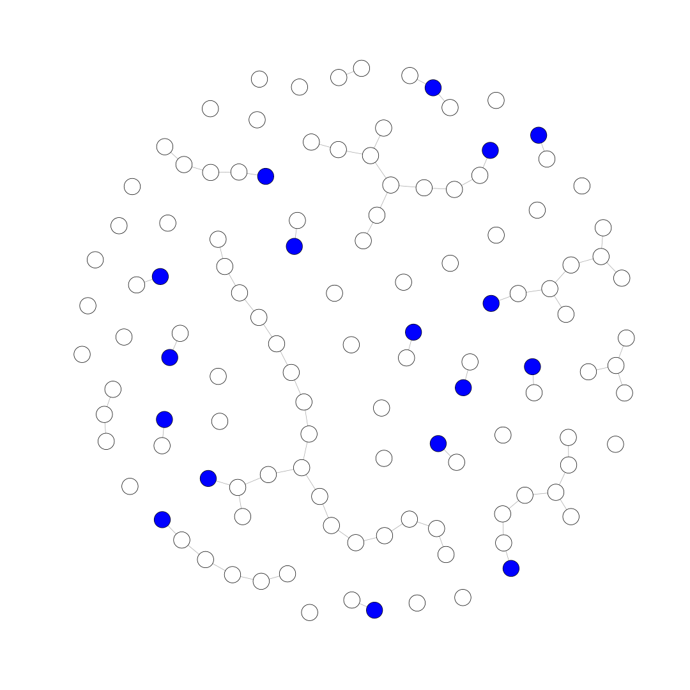
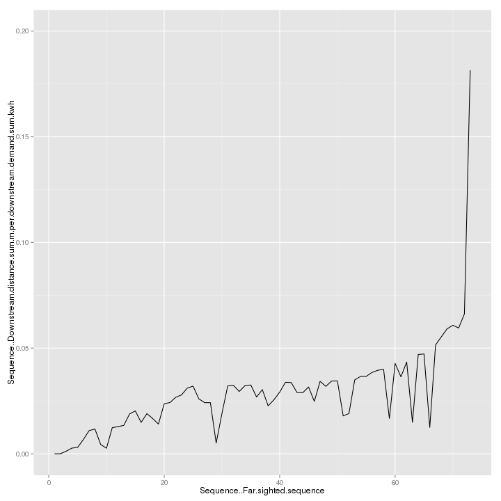

In this tutorial, we'll be taking the output of a NetworkPlanner scenario and sequencing it via the NetworkPlanner R library.
The NetworkPlanner R library is an open source utility developed at SEL for analyzing NetworkPlanner outputs (and potentially other datasets) in R.
You can learn more about it here
You can skip this step if you have already installed the library
To install the NetworkPlanner R library, you must install the devtools package from the developers of R studio. Once that's done, you can install our library.
install.packages('devtools')
require(devtools)
install_github("SEL-Columbia/networkplanner.R")
Now that you have the library installed, you need to locate the directory containing the NetworkPlanner output that you want to work with.
I'm using my scenario directory below, but yours may vary.
Remember to set your working directory appropriately.
#Load the library first
require(networkplanner)
# Set the directory containing the output of a Network Planner
# scenario. This will need to change depending on your files location
base_dir <- "3206"
Load the NetworkPlanner scenario
np <- read_networkplan(base_dir)
## OGR data source with driver: ESRI Shapefile
## Source: "3206", layer: "networks-proposed"
## with 70 features and 1 fields
## Feature type: wkbLineString with 2 dimensions
This step is optional, but serves as a validation that you have loaded the network properly.
The plot displays all nodes of the scenario, including those that are not actually connected to the network. Nodes representing connections to the existing grid are colored in blue.
V(np@network)[V(np@network)$Network..Is.fake]$color <- "blue"
plot(np@network, vertex.size=6, vertex.label="")

Sequence the networkplan via our model (mv_v_dmd_sequence_model).
This model orders the nodes and segments via a combination of network topology and financial viability.
Financial viability is determined by minimizing the following on a nodal basis:
\[\frac{\sum_{i=1}^{n} distance_{i}}{\sum_{i=1}^{n} demand_{i}}\]
Where the sum of distances and demands are calculated over all downstream nodes.
np <- sequence_plan_far(np, sequence_model=mv_v_dmd_sequence_model)
This curve shows the Financial viability curve over the sequence.
Note: This requires the ggplot2 library which can be installed via install.packages("ggplot2")
require(ggplot2)
settlements <- get.data.frame(np@network, what="vertices")
ggplot(settlements, aes(Sequence..Far.sighted.sequence,
Sequence..Downstream.distance.sum.m.per.downstream.demand.sum.kwh)) +
geom_line() +
ylim(0, 0.2)

Now we can write the sequenced output for import into other tools like QGIS or Excel.
We'll write it to the same directory that we loaded the scenario from (base_dir).
write.NetworkPlan(np, base_dir)